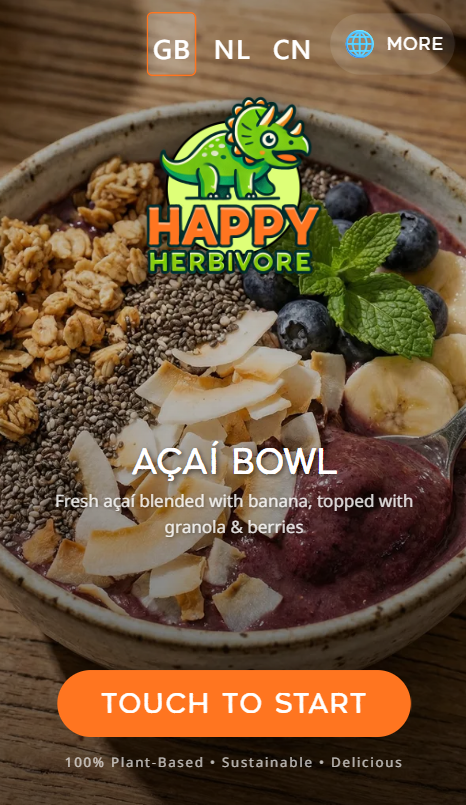

Over dit project
Kiosk-applicatie met meertalige interface (EN/NL/CN), touch-to-start flow en professionele merkidentiteit voor Happy Herbivore.
- Touch-to-start kiosk flow
- Meertalige interface
- Visueel verzorgd merkidentiteit design
Interactieve kiosk voor een plant-based food concept met touch-interface en meertalige ondersteuning.

Kiosk-applicatie met meertalige interface (EN/NL/CN), touch-to-start flow en professionele merkidentiteit voor Happy Herbivore.